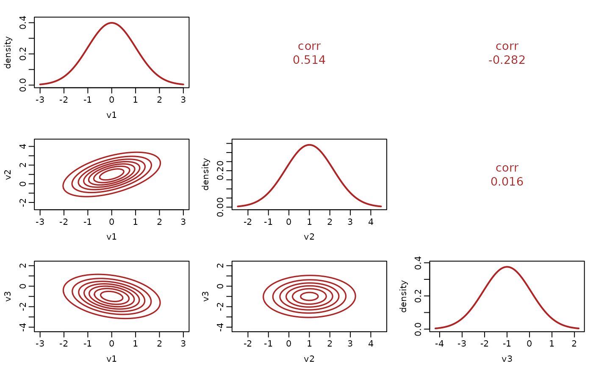

Draws a multivariate distribution as a matrix of panels: the marginal density of each coordinate on the diagonal, and contours of each bivariate marginal below it.
Arguments
- x
An object inheriting from class
multivariate_distrib.- theta
A named list or vector of parameters. Generated at random when missing, as for a univariate distribution.
- which
The coordinates to show. Defaults to all of them.
- n_grid
Points per axis for the marginal densities and the contours.
- col_fit
Color of the density and of the contours.
- ...
Passed to the underlying plotting calls.
Details
The picture is built from marginals, so it exists exactly when
mv_marginal does. Above about three coordinates the panel
matrix stops being readable, so a larger distribution is rejected with the
suggestion of choosing coordinates rather than being drawn illegibly.
The contours are drawn at levels of the density itself rather than at probability levels: the equal-density contour is what the density's shape means, and computing a probability level would need the orthant integral this package does not approximate in several dimensions.
Examples
d <- mvgaussian_distrib(3)
theta <- as.list(stats::setNames(
c(0, 1, -1, 0, 0, 0, 0.6, -0.3, 0.2), d@params
))
plot(d, theta)
